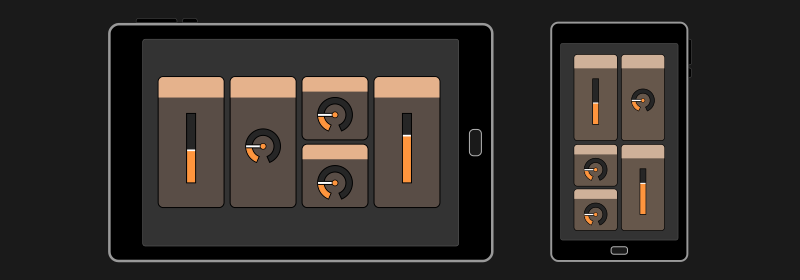
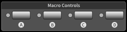
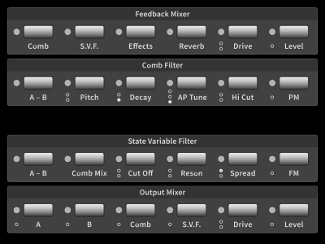
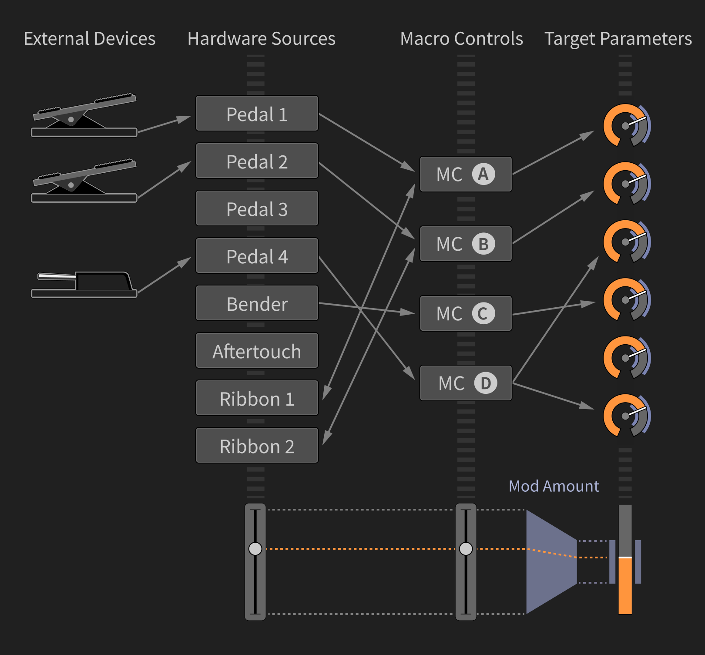
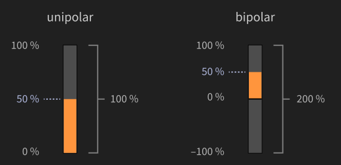
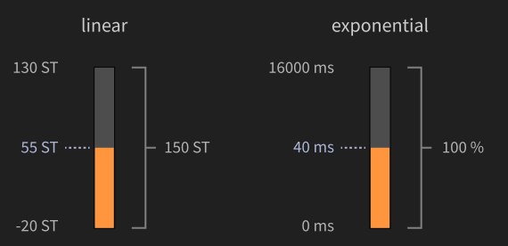
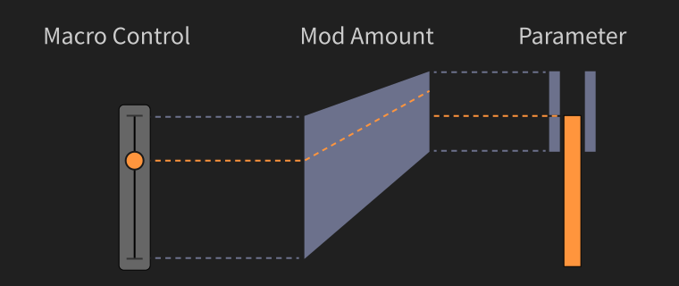
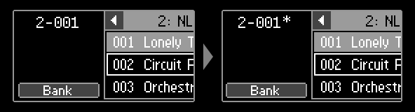
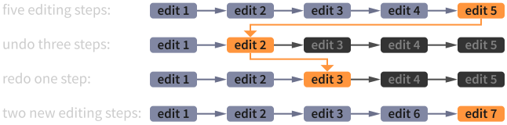
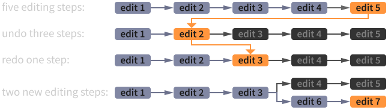

3. Basic Concepts
Interaction with the C15 is possible in multiple ways, each consisting of a different organisation and optimized layout of represented information, corresponding to the interface used. However, the basic structure and handling remains comparable, as every interaction possibility follows the main underlying principle.
These general concepts, as well as terms and keywords are subject of this chapter and will be explained in further detail - in order to understand interaction methods on both Hardware and Graphical User Interface, as well as the modulation mechanism and presets.
In total, there are three interfaces to consider:
The Base Unit provides access to all performance-related items (Hardware Sources, keys). Furthermore, it can be used to edit parameters and navigate presets and banks. Navigation of parameters is a candidate for future integration.
The Panel UnitThe Panel Unit can be used to select and edit parameters, modulation and system settings. Presets, banks and the undo history can be navigated and managed. In short, all relevant data can be modified on the Panel Unit.
The Graphical User Interface The Graphical User Interface provides complete access to parameters and modulation and system settings as well. In addition, there are some more helper features and settings available. The User Manual is also available as a separate HTML document.
Each interface holds items that are elements which can be interacted with (most of them being part of a preset). In the following, items and their features will be explained in general (before focussing on the individual interfaces in the following chapters).
3.1 Performance (Keybed and Hardware Sources)
A pressed key (left), with Aftertouch (right)
The Keybed as the arguably most important performance input provides polyphonic control over notes (currently 20 voices) and monophonic aftertouch (as shown in the picture above). The semi-weighted, high quality Keybed is produced by Fatar, offering 61 keys (spanning 5 octaves).
Apart from the integrated, monophonic Aftertouch, there are seven additional monophonic Hardware Sources supporting performance. (Currently, the whole modulation mechanism is monophonic.) The Bender, two Ribbons (as shown in the upper picture below) and four external pedals (as shown in the lower pictures below: a continuous and a switch pedal) can be integrated and used for expressive play.
While performing, notes can be played (on the Keybed) and movements can be made (via the Hardware Sources) in order to bring motion and variability into your sound.
The eight Hardware Sources are considered the first of three modulation stages, gathering the user’s performance input and redistributing movements to the four Macro Controls. Hardware Sources provide a variety of aspects, depending on the behavior and settings of an individual source.
To explore all related details, refer to 5.3 Using Hardware Sources.
3.2 Macro Controls
There are four additional parameters, that don’t have any connection or effect by default. They are called “Macro Controls” and represent the second of three modulation stages. Macro Controls are potential modulation targets for Hardware Sources, whereas (modulation target) parameters are potential targets for Macro Controls. Therefore, Macro Controls can be seen as the center stage of the modulation mechanism, redistributing the movements of Hardware Sources to parameters.
The purpose of a Macro Control is to be defined by the sound designer and embodies a primary tool to bring variation into a sound, as Macro Controls are both interactive (they can be edited) and performant (they can be modulated).
3.3 Parameters
Items that are relevant for synthesis are called parameters and are organized in groups. Each group combines all parameters related to a particular process of the synthesis engine (such as an envelope). Some parameters are integrated in the modulation mechanism and can be referred to as “modulation targets”.
Currently, there are 239 parameters organized in 21 groups, 89 of the parameters working as modulation targets.
3.4 Modulation Scheme
The modulation mechanism translates movements of user performance (on the Hardware Sources) into parameter movements, increasing the variation and expressivity of a preset.
There is no automatic modulation (like an LFO - except for the Flanger) within the C15 instrument, only the user has an influence on movements.
In the Sound Engine, almost all parameters operate as smoothers. The smoothing time depends on the instrument settings and operational context. (There is a smoothing time for parameter edits, a transition time for preset recall and a smoothing time for modulation as well, defined for each Macro Control, which is currently in development).
In a preset, the flow of movements is defined by several amount parameters, weighting the amount and direction of movements. Each Hardware Source features a separate amount for each Macro Control. Multiple Hardware Sources can affect one specific Macro Control.
Any target parameter features an MC selector and modulation amount, completing the routing of modulations. A target parameter can only follow one Macro Control. The effect of Hardware Sources on Macro Controls is essentially dependent on the type and settings of the source, so it is hard to generalize.
The effect of Macro Controls on target parameters on the other hand can be generalized. Defining modulation aspects of a parameter happens in relative context to both the Macro Control and the parameter as neither of them changes when editing modulation amounts.
Modulation amounts define the range for target parameters in which to move according to the corresponding Macro Control. As neither Macro Control nor the target parameter change in position, the amount will always reflect the Macro Control position within the modulation range.
When comparing unipolar and bipolar target parameters, it becomes obvious that the full modulation range (-100% ... 100%) for bipolar parameters is effectively twice the unipolar parameter modulation range (0% ... 100%).
When a target parameter has a linear scaling, the modulation amount can be displayed in the same format, sharing the parameter’s unit. Nonlinear scalings of target parameters require the modulation amount to be in percent.
There can be cases where the modulation range exceeds the parameter range. When a modulation moves a parameter out of its operational range, it will remain at the corresponding edge (clipped) until the modulation went back far enough to fit the parameter range again.
Use this interactive Modulation Scheme for a better understanding of the modulation mechanism.
More information about Hardware Sources and the modulation mechanism can be found in chapter 5.3 Using Hardware Sources.
The section „Modulation Aspects“ explains the current standard setting, which is commonly used in the factory presets.
3.5 Presets
At any time, the current sound can be stored (and later recalled) as a preset. Presets are organized in banks, so that every preset has a unique path (bank number / preset number). There are some more aspects of a preset, which are explained in the following:
-
Preset Name
Each preset can have its own user-definable name. When storing a preset, a name will be requested. However, the name of a preset can be changed later on.
-
Preset Number
The preset will have a certain position in the containing bank. Together with the bank number, a unique number emerges for each preset and will be shown on each user interface. For example, the unique number “1-001” refers to the first preset in the first bank.
-
Preset Info
Every preset holds a small collection of metadata, most of them being automatically defined when storing. Besides the device name, the software version and a time stamp, there are elements to be defined by the user: The name of a preset can be edited, the position in the bank can be set, a color tag can be associated and a comment text is provided. In the comment text, sound descriptions or playing instructions can be placed.
In addition, the preset comment text will be evaluated when searching for presets with certain keywords. This works especially well when keywords are defined as tags with the hashtag symbol “#”. -
Change Recognition

When changing a loaded preset, the system will recognize any change and indicate it by a star symbol (“*”) behind the unique number. When storing a sound after changes occurred, it will be interpreted as a new preset by the system, unless the user forces overwriting an existing preset.
More information about dealing with changes to loaded presets can be found in chapter 4.8 Overviews .
3.6 Organization
All accessible items on the C15 instrument are organized into functional groups. Parameters are grouped according to their functional relations in the Sound Engine, Hardware Sources and Macro Controls are grouped close to each other, and other items are organized in menu structures.
The Hardware User Interface (consisting of Base and Panel Unit) provides quick access to all parameters, which are packed in groups. However, not every parameter is accessible by one click, as several parameters can be stacked behind one selection button.
In the Graphical User Interface, every parameter and every bank will be shown in the main area. This requires physical space to represent all necessary information, which may not be sufficiently provided by the screen dimensions and resolutions of external devices. In order to cope with these limitations, zooming is a crucial part of working with the Graphical User Interface, as different levels of detail emerge on different zoom levels.
3.7 The Undo Tree
The usual undo history of a program would be a list-like data structure. When an editing action is tracked, it will be simply appended. If a certain number of edits was undone, they will be lost when continuing with new editing actions.
However, the C15 undo history is realized as a tree-like data structure. All editing actions will be tracked and new branches will emerge when continuing with new editing actions (after having undone a certain number of edits).
Using this mechanism, there will be no loss of editing steps, as all steps and branches are accessible. Nevertheless, an ever-growing undo tree will require lots of memory and may be capable of slowing down the system. This can be avoided by making a certain element the new root of the tree (elements prior to that position will be lost in this case) or by deleting inactive branches of the undo tree.
Within a branch, the mechanism is quite similar to the ordinary list-based undo, providing backward and forward navigation via undo or redo. The extended tree- based functionalities emerge when navigating to other branches.
The C15 undo mechanism tracks different user actions. Parameter selection, edits to parameters, preset recalls and edits to presets and banks can be undone. However, the modulation mechanism is not integrated into the undo mechanism, as it is part of the user performance.